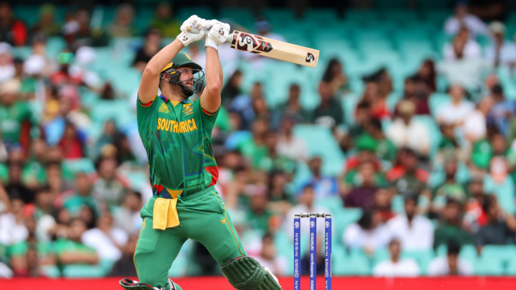

By-polls irregularities: EC probe finds 100 involved

The Election Commission's probe committee has found that around 100 people, including election officials, were involved in electoral irregularities during the Gaibandha-5 by-polls on October 12. A committee member said almost all the 100 carried out duties as presiding officers, assistant presiding officers or polling agents appointed by party candidates. Read more...
Rossouw strikes T20 WC's first ton as Tigers face uphill battle
Rilee Rossouw struck the first century of the ongoing T20 World Cup as South Africa batters took apart Bangladesh bowling after electing to bat first in the two sides' second Super 12 fixture of the ongoing mega event in Sydney today. Read more...